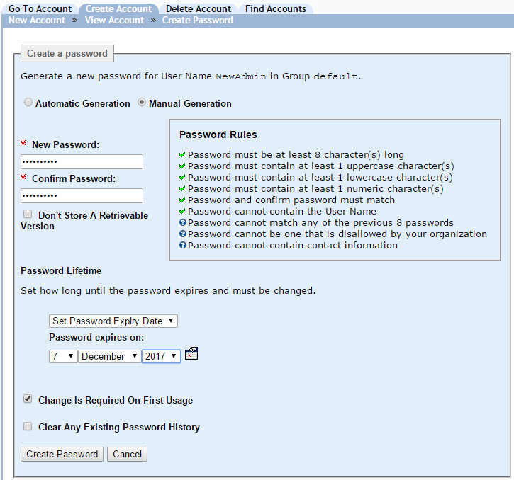

|
IdentityGuard Server 12.0 Administration Guide |
|
IdentityGuard Server 12.0 Administration Guide |
You can create a password for any user, including another administrator, if your role allows it. You need the userPasswordCreate permission and permission to modify the specific administrator's account.
To create a password for an administrator
1. Find the administrator to assign a password to. (See Find an administrator account.)
2. Under Authentication Types on the administrator’s Account Information pane, select Password.
Password information appears.
3. Click Create Password.
The Create Password page appears.
You have two choices for password creation, automatic or manual.
4. To have Entrust IdentityGuard create the password, select Automatic Generation.
Autogenerated passwords use a reduced character set. For details, see Autogenerated passwords.
5. To create a password manually, complete the following steps:
a. Select Manual Generation.

Several options appear.
b. In the New Password field, enter a password that conforms to the rules displayed.
c. Repeat the password in the Confirm Password field.
6. Select Don’t Store A Retrievable Version if you do not want the password displayed on the Password pane for the administrator. (See Retrievable passwords.)
7. From the Password Lifetime drop-down list, select a password expiry period. The default is 56 days.
● Set Password Lifetime Select this option to specify an exact number of days or months.
● Set Password Expiry Date Select this option to specify an exact date.
8. Select Change Is Required On First Usage to force the administrator to enter a new password at the first login. This keeps the administrator’s password private.
9. When changing a password, the Clear Any Existing Password History option appears. As set by default policy, a new password cannot be the same as any of the last eight passwords used by that person. Selecting this option clears the history and allows the reuse of a recent password.
10. Click Create Password.
The Account Information pane reappears showing the new password information.